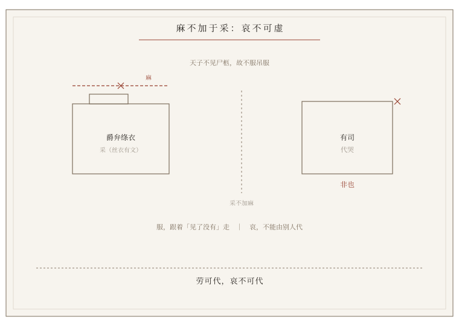

檀弓上 · 三·一百一十三 · 第 316 课
天子之哭诸侯也，爵弁绖纟才衣。或曰，使有司哭之。非也。哀戚之事不可虚。为之不以乐食。
说什么事：天子哭诸侯，穿爵弁、绦衣，是士之祭服。有人说：让有司代哭吧。不对——哀戚之事不可虚。那一日吃饭不奏乐。
落在哪一层：以「见未见」与「可代不可代」量哀。论「劳可代，哀不可代」。
为何编在此位：三百零七课论「父兄命赴者」——可代其劳不可代其名。此课承之，再往深处一层：名可以不代而代，哀连代也不许。
【经】天子之哭諸侯也，爵弁絰紕衣。
【注】服士之祭服以哭之，明為變也。天子至尊，不見尸柩，不吊服，麻不加於采。此言「絰」，衍字也。時人間有弁絰，因云之耳。《周禮》：「王吊諸侯，弁絰緦衰也。」
【经】或曰，使有司哭之。非也。哀戚之事不可虛。
【注】蓋謂殯、斂之間。
【疏】「天子至尊，不见尸柩，不吊服」者，薨在本国，天子遥哭之，不亲见尸柩，不服缌衰；吊而服爵弁紕衣，紕衣，丝衣也；则诸侯以下，虽不见尸柩，仍吊服也。「或曰使有司哭之」者，或人云：天子不自哭，但令有司哭之耳。非也。「为之不以乐食」，此是记者之言，非复或人之说也；天子食有乐，今哭诸侯，故食不复奏乐也；此「不以乐食」者，盖谓殡敛之间，郑以意断不用乐之期也；诸侯五日殡也。
爵弁 士之祭冠。弁而爵色。
绖 丧首绖或要绖。注断此为衍字。
纟才衣 底本作「纟才」，诸本作「缁」或「纯」。注：「纟才衣，丝衣也。」
吊服 往吊所服之服。天子于诸侯之丧不服吊服。
麻不加于采 丧之麻不加于采色之衣。采，谓有文采。
虚 空。哀而不实，谓之虚。
不以乐食 食时不奏乐。天子常食有乐。
天子哭诸侯，戴爵弁、着绦衣——这是士的祭服。有人说：让有司去哭就是了。不对。哀戚之事不能空着。那一日吃饭，不奏乐。
此节三件事：穿什么、谁哭、吃不奏乐。
穿的是爵弁绦衣，士之祭服。这不是丧服，是祭服——因为天子不见尸柩，故不服吊服，只把常服换作祭服，以示「变」。注一句「麻不加于采」是总纲：丧之麻不能加在采色之衣上。
谁哭：天子自哭。有人说可使有司代，经断之曰「非也，哀戚之事不可虚」。七个字，是全部理由。
吃不奏乐：注说这是记者之言，非或人之说；又说「盖谓殡敛之间」——诸侯五日而殡，故五日不乐。
三件事其实是一件事：哀要有着落。着落在衣上（变服）、着落在人上（亲哭）、着落在食上（去乐）。三处都有着落，哀才不虚。
第一层 「麻不加于采」：半凶半吉的衣服，礼不认 爵弁绦衣是采（丝衣有文），故不加麻绖。这是一条形式规则，背后是一条实质规则：要么全凶，要么全吉；哀与饰不可混在一身。
今人办丧，常半素半艳——黑衣配金饰、素服而浓妆。此条正说此事：不是不许饰，是不许饰与哀同处一身。哀有哀的全套，饰有饰的全套，两套不可拼。
第二层 「不见尸柩，不吊服」：服跟着「见了没有」走 吊服是给亲见死者的人穿的。天子在本国，诸侯薨在封国，天子遥哭而不见尸柩，故不服吊服。
礼在这里极讲实：服不是跟着「死了谁」走的，是跟着「我见了没有」走的。这一条最见礼的精神——礼不承认「心里难过就等于到场」。
第三层 「非也」二字：劳可代，哀不可代 「使有司哭之，非也。」为什么不可？「哀戚之事不可虚。」
对照三百零七课：父兄可以代孝子命赴者，因为赴是「事」；此处不可使有司代哭，因为哭是「情」。事可代，情不可代。
这是本批的一条暗线，到此才说破。可代者，凡有形式的；不可代者，凡无形式的。赴有文书之形，故可代；哭无文书之形，故不可代。礼辨事与情，不在大小，在有没有形。
第四层 「盖谓殡敛之间」：注家承认期有未定 「为之不以乐食」，究竟几日不乐？注说「盖谓殡敛之间」，又以「诸侯五日殡」推之。用一个「盖」字，是明说：此处置以意断，不敢定。
礼学的诚实，正在这些「盖」字上。能断者断之，不能断者曰「盖」。今人注书，多好作定论；古人注书，把不确定留在纸上。
与今日何干 今人遇丧，多以「代送花圈、代写挽联、代到场」为礼。此节划的线是：劳可代，哀不可代。可以请人替你跑腿，不能请人替你难过。凡把难过外包的，都是「虚」。
| 左 | 右 |
|---|---|
| 爵弁绦衣 | 士之祭服 |
| 不见尸柩 | 不吊服 |
| 麻不加于采 | 半凶半吉不认 |
| 绖 | 衍字 |
| 使有司哭 | 非也 |
| 哀戚之事 | 不可虚 |
| 不以乐食 | 殡敛之间 |
| 诸侯五日殡 | 不乐之期 |
画一处高台之上，视点平视略仰。一人立于台上，背身向远处，衣为丝质采色（以细密斜纹示意），头戴爵弁，腰间无麻绖；台下远处，城郭一角淡而虚。不画人面、不写文字。赭色只用在衣缘一道，与远处城角一道线。
